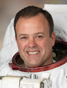

Lyndon B. Johnson Space Center
Houston, Texas 77058
|
National Aeronautics and Space Administration Lyndon B. Johnson Space Center Houston, Texas 77058 |
 |
Biographical Data |
||
Ronald J. Garan, Jr. (COLONEL, U.S. AIR FORCE, RET.)
NASA Astronaut (Former)
PERSONAL DATA: Born on October 30, 1961, in Yonkers, NY. Married to the former Carmel Courtney of Brooklyn, NY, and Scranton, PA. They have three sons. His father, Ronald Garan, Sr., resides in Yonkers, NY. His mother, Linda Lichtblau, resides in Port St. Lucie, FL, with her husband, Peter Lichtblau.
EDUCATION: Graduated from Roosevelt High School, Yonkers, NY, in 1979. Earned a Bachelor of Science degree in Business Economics from the SUNY College at Oneonta, 1982. Earned a Master of Aeronautical Science degree from Embry Riddle Aeronautical University, 1994. Earned a Master of Science degree in Aerospace Engineering from the University of Florida, 1996.
ORGANIZATIONS: Society of Experimental Test Pilots, Engineers Without Borders, Association of Space Explorers, Member of the Launch.org Council, and Founder of the Manna Energy Foundation.
AWARDS: Military decorations include the Legion of Merit, Distinguished Flying Cross for Combat Valor, Meritorious Service Medals, Air Medals, Aerial Achievement Medals, Air Force Outstanding Unit Award with Valor, Humanitarian Service Award, Kuwait Liberation Medal and various other service awards, NASA Distinguished Service Medal, two NASA Spaceflight Medals, NASA Superior Accomplishment Award, NASA Exceptional Achievement Medal, Russian Space Agency Award for International Collaboration in the Field of Space Exploration and The Russian Federation of Cosmonautics "Yuri Gagarin’s Flight" Medal.
SPECIAL HONORS: Distinguished Graduate and Top Academic Award, United States Air Force Fighter Weapons School; twice selected as Top Academic Instructor Pilot, United States Air Force Weapons School; United States Air Force Weapons School and United States Air Force Weapons and Tactics Center Lt. Gen. Claire Lee Chennault Award; Distinguished Graduate, Squadron Officers School; Top Academic Award, F-16 Replacement Training Unit (RTU); Recipient of the 2011 Spirit of Yuri’s Night Award; Honorary Doctor of Science degree from the State University of New York.
EXPERIENCE: Garan received his commission as a Second Lieutenant in the United States Air Force in 1984 and earned his wings at Vance Air Force Base, Oklahoma in 1985. He completed F-16 training at Luke Air Force Base, Arizona, and reported to Hahn Air Base in former West Germany, where he served as a combat-ready F-16 pilot in the 496th Tactical Fighter Squadron (TFS) from 1986 to 1988. In March 1988, he was reassigned to the 17th TFS, Shaw Air Force Base, South Carolina, where he served as an instructor pilot, evaluator pilot and combat ready F-16 pilot. While stationed at Shaw, he attended the United States Air Force Fighter Weapons School, graduating in 1989, and then returned to the 17th TFS to assume the position of Squadron Weapons Officer. From August 1990 to March 1991, he deployed to Southwest Asia in support of Operations Desert Shield/Desert Storm, where he flew combat missions in the F-16. In 1991, Garan was reassigned to the U.S. Air Force Weapons School, Nellis Air Force Base, Nevada, where he served as an F-16 Weapons School Instructor Pilot, Flight Commander and Assistant Operations Officer. In 1994, he was reassigned to the 39th Flight Test Squadron (FTS), Eglin Air Force Base, Florida, where he served as a developmental test pilot and chief F-16 pilot. Garan attended the U.S. Naval Test Pilot School at the Patuxent River Naval Air Station, Maryland, from January to December 1997, after which he was reassigned to the 39th FTS, Eglin Air Force Base, Florida, where he served as the Director of the Joint Air to Surface Standoff Missile Combined Test Force. Garan was the Operations Officer of the 40th FTS when he was selected for the astronaut program. He has logged over 5,000 hours in more than 30 different aircraft. Garan retired from the Air Force on June 1, 2009.
NASA EXPERIENCE: Selected as a pilot by NASA in July 2000, Garan reported for training in August 2000. Following the completion of 2 years of training and evaluation, he was assigned technical duties in the Astronaut Office Station and Shuttle Operations Branches and contributed to both the Columbia mishap investigation and Return-to-Flight efforts. In April 2006, he became an aquanaut through his participation in the joint NASA-NOAA, NEEMO 9 (NASA Extreme Environment Mission Operations), an exploration research mission held in Aquarius, the world’s only undersea research laboratory. During this 18-day mission, the six-person crew of NEEMO 9 developed lunar surface exploration procedures and telemedical technology applications in support of our Nation’s Vision for Space Exploration. Garan worked in NASA's Open Government Initiative, which seeks to develop innovative collaborations within government, industry and with citizens around the world. Most recently, he was detailed from NASA to the United States Agency for International Development (USAID) to help implement state-of-the-art technology to solving challenges facing the developing world. At USAID he initiated the Unity Node Program, a collaborative effort to enable humanitarian organizations around the world to work together toward common goals. Garan left the agency in September 2013 to continue this work as a private citizen, to continue telling the incredible success of the U.S. and international space programs through the Fragile Oasis initiative, and to launch several social entrepreneurial projects to help solve challenges facing our planet.
SPACEFLIGHT EXPERIENCE: Ron Garan completed his first spaceflight in 2008 on STS 124 as Mission Specialist 2 (Flight Engineer) for ascent and entry. STS-124 Discovery (May 31 to June 14, 2008) was the 123rd space shuttle flight and the 26th shuttle flight to the International Space Station . STS-124 launched from Kennedy Space Center, Florida, and docked with the space station on June 2, 2008, to deliver the Japanese Experiment Module-Pressurized Module (JEM-PM) and the Japanese Remote Manipulator System (JEM-RMS). STS-124 shuttle astronauts delivered the 37-foot (11-meter) Kibo lab and added its rooftop storage room, and Garan accumulated 20 hours and 32 minutes of EVA in three spacewalks required to maintain the station and prime the new Japanese module’s robotic arm for work during the 9 days it was docked at the orbiting laboratory. The STS-124 mission was completed in 218 orbits, traveling 5,735,643 miles in 13 days, 18 hours, 13 minutes and 7 seconds.
Expedition 27/28 was Garan’s second space mission. Garan’s journey to the International Space Station began on April 4, 2011, with a launch from the Baikonur Cosmodrome in a Soyuz spacecraft dubbed “Gagarin.” The launch was from the same launch pad that Yuri Gagarin launched from nearly 50 years prior. While aboard the station, the crew continued work on a variety of microgravity experiments and received provisions from two shuttle missions, including the last space shuttle visit to the station. Garan participated in the last space-shuttle-based spacewalk during the STS-135 mission. Expedition 28 landed in Kazakhstan on September 15, 2011, after traveling 65,340,224 miles in 2,624 orbits during 164 days in space.
Garan has spent 18 days on the bottom of the ocean and has traveled 71,075,867 miles in the course of 2,842 orbits of our planet during more than 178 days in space including 27 hours and 3 minutes in four spacewalks.
OCTOBER 2013
This is the only version available from NASA. Updates must be sought from the above named individual.